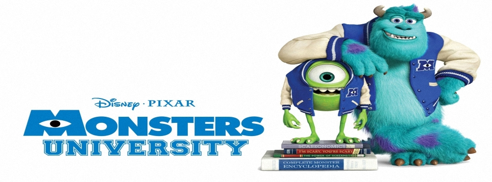

怪獸大學(Monsters University)
2013年6月21日

【片長時間】 約１０４分鐘
【作品類別】 迪士尼/皮克斯動畫，長篇劇情動畫片
【原著取材】 由迪士尼電腦動畫【怪獸電力公司】衍生劇情
【內容介紹】繼【玩具總動員】和【Cars：汽車總動員】之後，皮克斯動畫【怪獸電力公司】也推出後續作品，不過本系列所推出的將會是第一部電影的前傳，而不是續集。
故事將回到 十年前毛怪 Sulley 與大眼仔 Mike 的學生時代，是他們就讀於怪獸大學時期所發生的故事，原來這對好朋友當年剛認識時居然是死對頭！剛進大學主修嚇人的大眼仔 Mike ，遇到了天生嚇人高手毛怪 Sulley，兩人怎麼看都不對盤，處處開始一連串的競爭，且看這對拍檔當年在校園裡是如何相互較勁，最後才終於變成一輩子的好朋友。